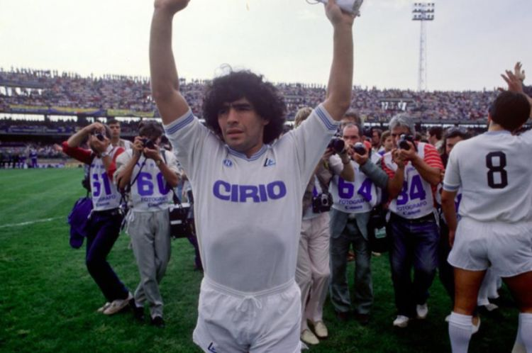

Nếu như có một cầu thủ nào đó được người hâm mộ tôn lên thánh thì chỉ có thể là Maradona. Bởi những gì
huyền thoại này làm được cho nền bóng đá thế giới là cực kỳ lớn. Dù kèm theo với đó là hàng loạt các vụ bê
bối trong sân hay bên ngoài sân cỏ. Hiện tại thì huyền thoại bóng đá này đã không còn nữa, và để mọi người
biết rõ hơn về cuộc đời ông. Thì ngay sau đây chúng tôi sẽ giới thiệu cho các bạn về tiểu sử Maradona, một
trong những tài năng xuất chúng nhất mà làng túc cầu từng sản sinh.
Tiểu sử Maradona
Theo tiểu sử Maradona thì cầu thủ này tên đầy đủ là Diego Armando Maradona Franco, sinh tại Lanús, Buenos
Aires, Argentina vào ngày 30 tháng 10, 1960. Ông sinh trong 1 gia đình với 3 em gái và 2 anh em trai. Có thể
nói từ lúc nhỏ, cuộc sống của Maradona đã thiếu thốn đủ bề, khi gia đình ông phải sống trong khu ổ chuột ở
vùng Lanús. Cũng giống như tất cả những đứa trẻ ở đây, thú vui duy nhất mà chúng có được chính là bóng đá.
Và với Maradona thì trái bóng chính là người bạn thân nhất của ông trong thời thơ ấu.
Tài năng xuất chúng của ông được phát hiện từ khá sớm, khi lên 8 tuổi ông đã trở thành 1 sao mai tại CLB
Estrella Roja. Ngay sau đó ông gia nhập The Little Onions – đội trẻ của Argentina Juniors, tại đây với những
pha đi bóng lắc léo đầy kỹ thuật, Maradona đã khiến cho các huấn luyện viên phải tròn mắt nhìn. Theo lời kể
của Maradona thì thuở niên thiếu ông thần tượng nhất là George Best của Manchester United và
Rivelino của Brazil. Cũng chính 2 người này đã truyền cảm hứng cho Maradona từ những ngày đầu ông chơi bóng.
Sự nghiệp của Maradona
Trong tiểu sử Maradona thì cả nghiệp của ông không thi đấu cho quá nhiều CLB, tuy nhiên mỗi CLB đi qua,
tiền đạo này đều để lại ấn tượng khá lớn.
Boca Juniors
Boca Juniors là CLB yêu thích nhất của Maradona tại Argentina, nhưng ông chỉ chơi 1 mùa duy nhất tại đây vào
mùa giải 1981-82. Tuy nhiên với 1 mùa giải ở đây, cầu thủ trẻ lúc đó chỉ mới 18 tuổi đã thể hiện được rất
nhiều điều. Cụ thể ông đã ghi được đến 28 bàn thắng trong 40 lần ra sân, đây là một hiệu suất cực kỳ đáng
nể. Maradona cũng có bàn thắng khá đáng nhớ là pha lập công vào lưới của River Plate, kình địch số 1 của
Boca Juniors. Ở mùa giải này thì ông cũng có được chức vô địch Argentina Preservision lần đầu tiên, thêm với
đó là 1 chức vô địch Libertadores.
Barcelona
Với thành tích đáng nể tại Boca Juniors, ngay lập tức các tuyển trạch viên của Boca Juniors đã bay sang
Argentina để đàm phán và chiêu mộ Maradona. Ngay lập tức 1 hợp đồng được ký kết, qua đó Barca phải trả mức
giá lên đến 5 triệu bảng anh cho tiền đạo này, qua đó biến Maradona trở thành cầu thủ đắt giá nhất Thế Giới.
Tuy nhiên so với số tiền bỏ ra thì Barcelona chỉ nhận lại được thất vọng. Bởi trong 2 mùa giải thi đấu tại
đội bóng sọc vàng đỏ, tiền đạo này chỉ ra sân 40 trận và thi đấu khá là nhạt nhòa. Để ngay sau đó anh chuyển
đến Napoli và trở thành 1 vị thánh tại CLB này.
Napoli
Trước khi Maradona đến, Napoli chỉ được đánh giá là một đội bóng tầm trung tại Ý. Tuy nhiên với sự góp mặt
của Cậu Bé Vàng, đội bóng này đã trở thành một thế lực của bóng đá Ý thực sự. Cụ thể trong tiểu sử Maradona
thì ông chuyển đến đội bóng miền Nam nước Ý vào năm 1984, sau khi có khoảng thời gian thi đấu không thành
công tại Barcelona. Tại đây ông đã thi đấu cho Napoli 5 mùa giải liên tiếp từ năm 1984 đến 1992 và đạt được
vô số những thành công.

Cụ thể ông giúp Napoli giành được Scudetto lần đầu tiên vào năm 1987 và thêm 1 lần nữa vào năm 1990. Qua đó
phá bỏ sự thống trị của Juventus và AC Milan. Ngoài ra ông còn có thêm 1 Coppa Italia năm 1987, 1 UEFA năm
1989 và 1 Siêu cúp Italia năm 1990. Về thành tích cá nhân, ông ghi được 81 bàn thắng trong 188 trận thi đấu
cho Napoli. Chính những điều này đã khiến ông được các cổ động viên tại đây tôn thành thánh.
Đội tuyển quốc gia Argentina
Với người dân Argentina, Maradona luôn là cầu thủ xuất sắc nhất mọi thời đại của họ. Bởi những gì ông cùng
Argentina đạt được hiện tại vẫn chưa có ai làm được, dù là Lionel Messi. Theo tiểu sử Maradona thì ông được
gọi lên khá sớm từ năm 16 tuổi. Tuy nhiên đến World Cup 1982 mới là giải đấu lớn đầu tiên mà ông tham gia.
Nhưng tại đây Argentina của ông lại bị loại khá sớm bởi Bỉ, và cá nhân ông thì ghi được 2 bàn thắng cùng với
1 chiếc thẻ đỏ.
Bốn năm sau trên đất Mexico thì hoàn toàn ngược lại, khi Maradona đã cho cả thế giới thấy sự tinh túy của
một cầu thủ bóng đá là như thế nào. Khi tại kỳ World Cup này ông đã có 1 trận đấu không thể tin nổi với đội
tuyển Anh tại tứ kết. Với 1 bàn thắng bằng tay và sau đó ông tự nhận là “Bàn Tay Của Chúa” cùng với đó là 1
pha làm bàn không thể tin nổi khi đi bóng qua đến 6 cầu thủ Anh sau đó qua luôn thủ môn rồi sút vào lưới.
Sau này thì bàn thắng này cũng được bầu chọn là “Bàn Thắng Thế Kỷ”. Sau đó ông cũng đã tỏa sáng trong các
trận đấu với Bỉ và trận chung kết với Tây Đức để dành được chiếc Cúp vàng danh giá.
Sau chiếc Cúp Vàng này thì ông cũng đã vào đến trận chung kết World Cup 1990 4 năm sau đó, tuy nhiên lại
thất bại trước chính người Đức. Tiểu sử Maradona thì năm 1994 là kỳ World Cup cuối cùng trong sự nghiệp của
ông, nhưng những vấn đề về ma túy đã khiến ông bị đuổi về ngay giữa giải đấu. Qua đó kết lại sự nghiệp cầu
thủ vĩ đại tại đội tuyển quốc gia của mình.Chúng ta cùng nhìn lại Maradona đã làm được gì trong kì World Cup
1986.
Qua đời
Vào ngày 25 tháng 11 năm 2020 cả thế giới phải đón 1 tin buồn khi huyền thoại Maradona qua đời ở tuổi 61.
Nguyên nhân chính được công bố là bởi một cơn đau tim. Ngay sau đó chính quyền thành phố Napoli đã cho đổi
tên sân vận động thành Diego Maradona để tri ân ông và Liên đoàn bóng đá Argentina cũng đổi tên Liên đoàn
bóng đá Argentina Cup Liên sang Chuyên nghiệp Argentina.